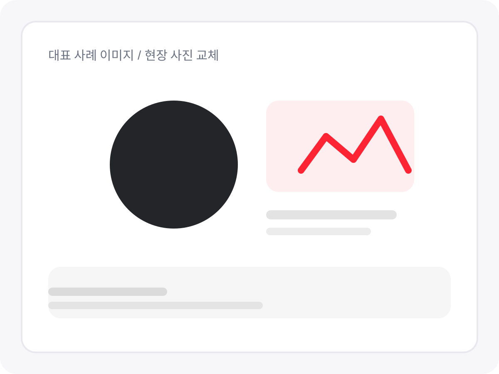
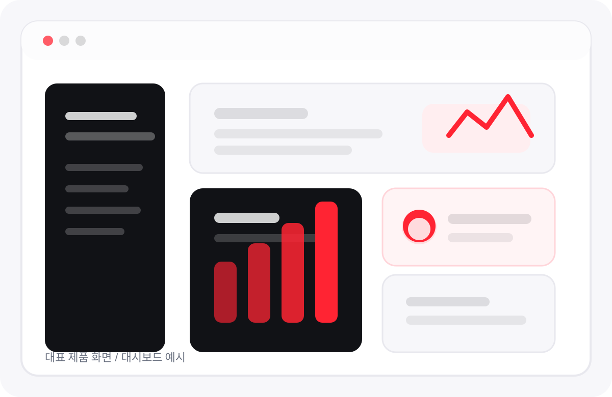
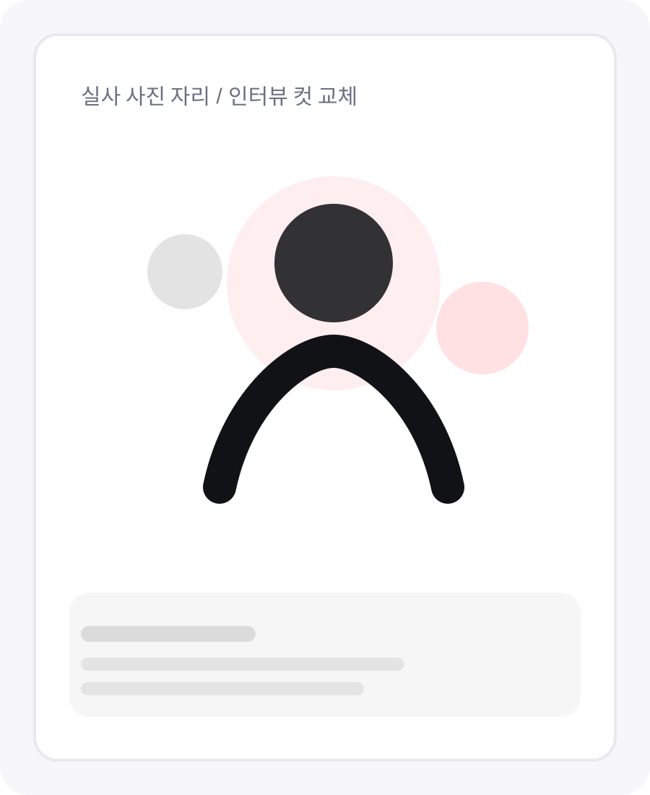
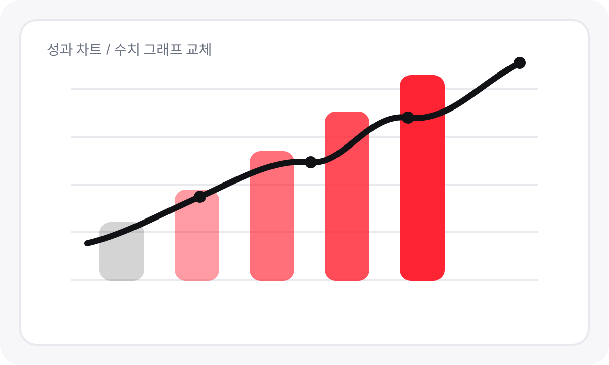
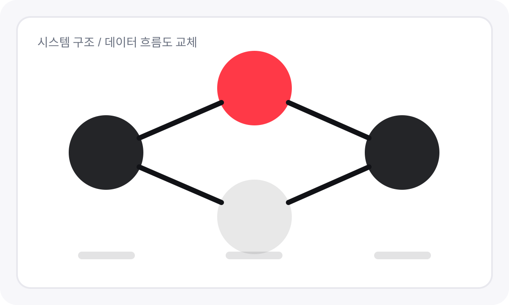
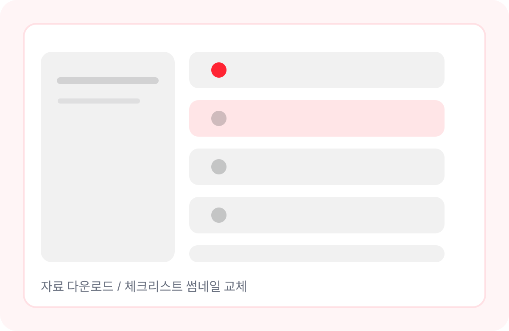

도입 전 문제 상황
- 수작업 보고와 반복 정리 시간이 과도하게 걸림
- 부서 간 정보 흐름이 끊겨 의사결정이 느림
- 성과를 숫자로 설명하기 어려워 내부 설득이 힘듦
케이스 상세 페이지는 랜딩보다 깊어야 합니다. 문제 배경, 실행 구조, 실제 결과, 고객 코멘트까지 한 번에 보여주는 구조로 구성했습니다.

왜 이 프로젝트가 필요했는지, 기존 방식이 어떤 한계를 가졌는지, 내부 설득 포인트는 무엇이었는지를 정리합니다.
결과만 말하는 케이스보다, 실제 접근 방식과 단계가 보이는 케이스가 훨씬 신뢰를 만듭니다.
목표 지표, 현재 구조, 필요한 데이터를 정렬합니다.
운영 화면과 리포트 흐름을 실제 환경에 맞게 구성합니다.
성과를 주기적으로 추적하고 개선 포인트를 반영합니다.



성과 수치, 운영 변화, 고객 한마디를 한 번에 보여주면 전환 연결이 가장 자연스럽습니다.
“단순히 결과물이 좋아진 게 아니라, 내부에서 설명하고 설득하는 시간이 확실히 줄었습니다.” [고객사 담당자 / 직함]
케이스 상세 페이지 하단에는 관련 리소스나 추가 사례를 붙여 체류 시간을 늘리는 것이 좋습니다.

기술 후기왜 가능한지 궁금해하는 고관여 리드를 위한 연결

체크리스트세일즈 부담 없이 이어지는 중간 전환 장치
숫자로 설득해야 하는 리드에게 잘 맞는 콘텐츠